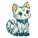
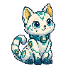
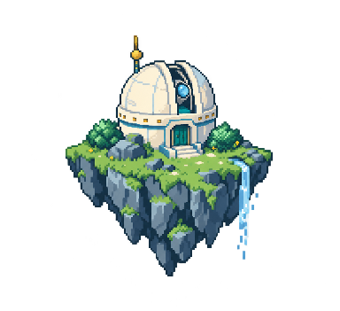

点击截图查看原始尺寸。默认首屏未滚动、未局部裁切。
长地图与学习伙伴
16 个真实测试课时，含未分组课时。以下为滚动后的视口，分别展示收起和展开状态；不与五课时首屏混作同一状态。
长标题与就近详情
选择长标题测试课时后的滚动视口。编号与真实标题保留，窄屏详情接在选中节点之后。
表单、弹层与原实验
这些页面仅检查公共壳与伙伴是否影响原操作，未扩展主体视觉设计。


相同母版，合适的网页尺寸
最近邻缩放 + 无损 WebP，保留透明边缘。下方小猫按实际 CSS 尺寸显示，可在浅底与深底检查轮廓；母版链接保留。

2× 版本 4,342 B

2× 版本 9,060 B

2× 版本 59,086 B
后端提供封面时优先用真实封面
小猫母版 814,710 B · 封面母版 1,901,454 B · 完整素材清单


图像字节变化不代表测得的加载时间改善。实际选择与缓存记录见资源 JSON。